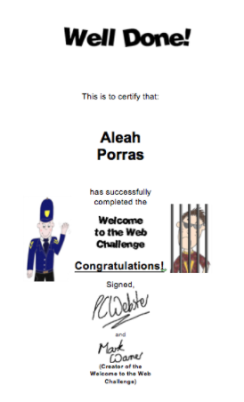

Facts About ATM
Now, what is ATM? ATM is a program for middle school and high school students and allows you to take the classes for 3 years straight(in middle school). You learn about various programs and sites on the web. You explore and learn many things in this amazing class.
In grade 6, we learned about cyber safety.
